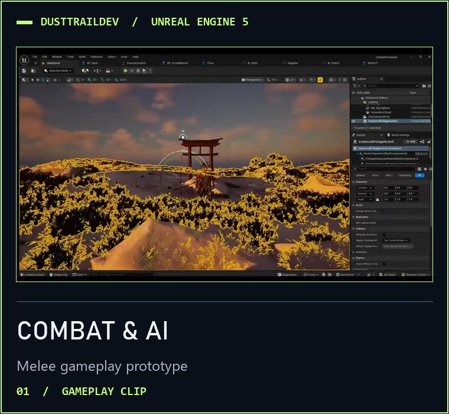

UNREAL ENGINE DEVELOPER
Muhammad
Abdul Basit.
I build gameplay systems in Unreal Engine 5, with a focus on melee combat, enemy AI, and modular C++ and Blueprint architecture.
Rawalpindi, Pakistan
PERSONAL PROJECT
BladeFall · Melee Combat
For this project, I built C++ components for damage, combos, and difficulty scaling, with delegates connecting them. Designers can tune parry, block, dodge, posture, and stamina in the editor. Boss AI uses Behavior Trees and EQS to switch among patrol, alert, melee, ranged attack, cover, and retreat. Dismemberment provides visual feedback on kills.
Explore combat footage ↓AVAILABLE ON FAB
Soulslike Combat Framework
A reusable Unreal Engine combat framework with parry, block, dodge, posture, stamina, and executions. Difficulty settings drive enemy reactions. A walkthrough demo shows how to connect the components, Behavior Tree, and UI.
View on Fab ↗GAMEPLAY SHOWCASE
Project footage
18 clips from Unreal Engine prototypes, technical demos, and playtests.
Combat & AI
Samurai Game Prototype
A samurai action prototype from my melee combat development work.
Watch video ↗Combat Framework Plugin
Combat Framework · Exhibit B
Second demonstration from the combat framework demo project.
Watch video ↗Combat Framework · Exhibit C
Third demonstration from the combat framework demo project.
Watch video ↗Inventory & Equipment
Inventory System · Alpha
An early walkthrough of the standalone inventory and equipment system.
Watch video ↗Multiplayer
Multiplayer Inventory & Shooting
Inventory and shooting in a multiplayer prototype using the Steam subsystem.
Watch video ↗Online Subsystem · Iteration 3
Third recorded iteration of multiplayer subsystem testing.
Watch video ↗Shooting
Basic Shooting Prototype
A Blueprint prototype with shooting, reload logic, and integrated ad monetization.
Watch video ↗ Source ↗Early Prototypes
First Combat Prototype
An early combat experiment from my Unreal Engine project archive.
Watch video ↗BLUEPRINTS
Assassination System
A stealth takedown system built in Unreal Engine Blueprints.
BACKGROUND
Experience & skills
CURRENT
Indigo Studios
Currently working at Indigo Studios.
FEBRUARY 2026 – PRESENT · ISLAMABAD
Arcadym Studios
Unreal Engine Developer Intern
Built a modular Blueprint architecture and a data-driven inventory and equipment system using DataTables and primary asset IDs. Developed a physics-based Jenga simulation with a custom block-extraction interaction. Profiled and fixed gameplay performance issues found in cross-platform testing.
EDUCATION · ISLAMABAD
Air University
BS in Game Development, in progress. Coursework includes game development, data structures and algorithms, OOP, and AI systems.
- Engine & programming
- Unreal Engine 5, C++, Blueprints
- Gameplay & AI
- Behavior Trees, EQS, melee combat, physics simulation, DataTables, inventory and equipment
- Development tools
- Git, GitHub, JetBrains Rider
- Design & implementation
- Level design, environment art, gameplay UI and UX